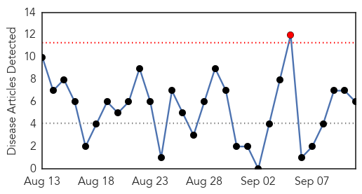
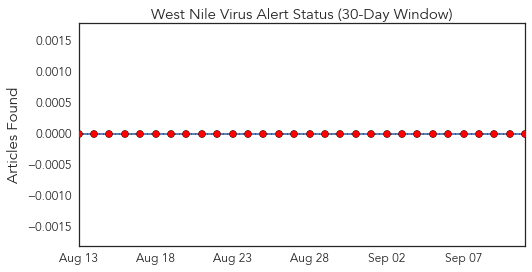
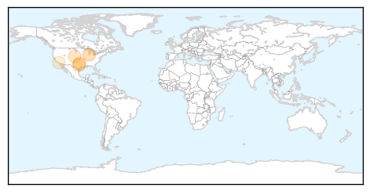
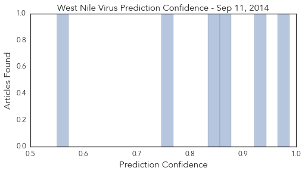

Toggle navigation
Early Warning
Daily Alerts
West Nile Virus
Sep 11, 2014
Compare to:
-
Dengue Fever
Hemmorhagic Fever
Mold/Fungal Infection
Influenza
Meningitis
Pertussis / Whooping Cough
Middle East Respiratory Syndrome
Cholera
Hepatitis
Chikungunya
Yellow Fever
Bubonic Plague
Swine Flu
Ebola
Measles
Unknown
Mumps
30 Day Trends
Web: 1
alerts
, 0
warnings
Twitter: 0
alerts
, 0
warnings
Top Articles:
0.987
Additional mosquitoes with West Nile virus found in Clifton
0.940
Gurnee man is first Lake County West Nile case
0.875
Arlington reports second human case of West Nile virus this year
0.837
Mosquitoes test positive for West Nile in Sugar Land
0.749
West Nile Virus-infected mosquitoes at high level in southwest Nebraska
0.550
California hit with record West Nile outbreak — and its epic drought is to blame
Top Tweets:
No tweets found for Sep 11, 2014
Web/News Articles

Tweets

Article Locations

Article Confidences
